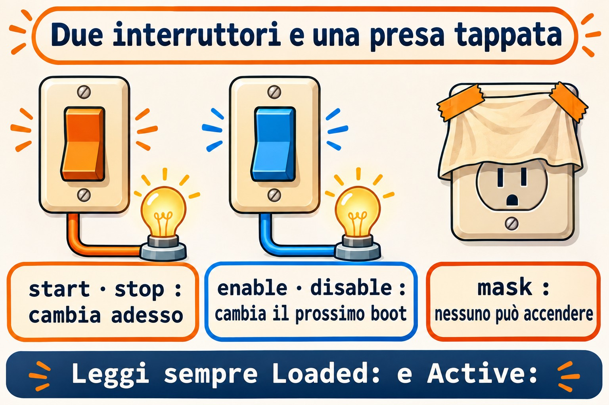
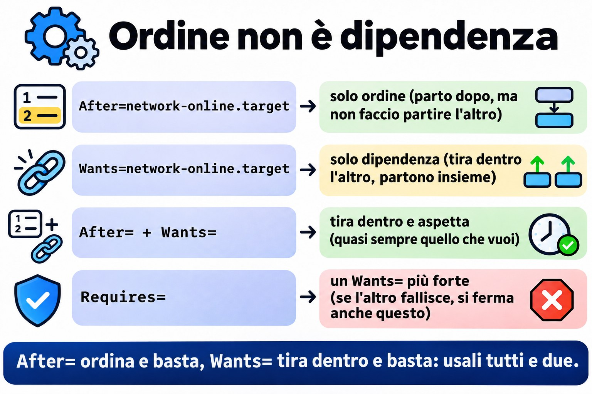
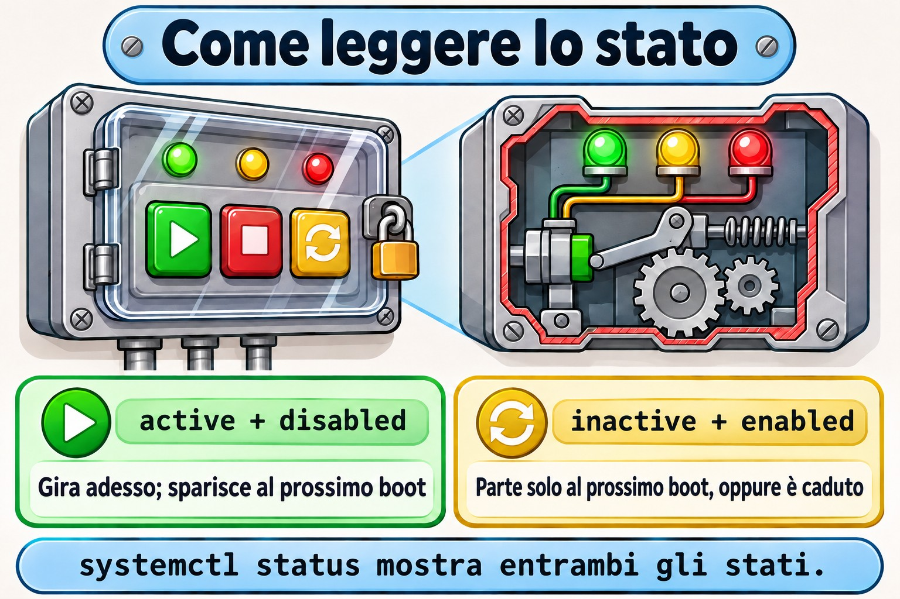

Lezione 4.2 · systemd: servizi e unit
Nella 4.1 hai visto systemd arrivare alla fine del boot. Oggi sei tu a comandare lui: lo accendi, lo spegni, lo fai partire al boot, gli vieti di partire, e cambi il comportamento di un servizio senza toccare il file del pacchetto. Quasi ogni richiesta su un server passa da qui: "il servizio è caduto", "non è tornato dopo il reboot", "devo cambiare un parametro". In Windows questo è services.msc; in Linux sono una mezza dozzina di comandi e due directory.
Formato nucleo. L'essenziale per un'emergenza senza internet, a mano. Il resto è elencato nella sezione 12, da tirare fuori con DeepTutor.
| Scheda | Lezione 4.2 |
|---|---|
| Modulo | M4 · Boot e systemd, lezione 2 di 4 |
| Quando | Settimana 8 |
| Alla fine sei in grado di | Leggere systemctl status e separare lo stato di adesso dallo stato al boot; avviare, fermare, riavviare e ricaricare servizi; abilitare, disabilitare e mascherare; scrivere un semplice file di unit; cambiare un servizio con systemctl edit senza toccare il file del pacchetto; trovare la causa di un servizio che non parte con status e journalctl -u |
| Prerequisiti | Lezione 4.1; Lezione 3.5 (vim e sudoedit) |
| Durata | Circa 1h30 |
| Snapshot | m4a2-inicio e m4a2-fim su entrambe le VM |
1 · Riscaldamento
Tre domande, a mente. Le soluzioni le controllano alla fine.
- Indovina: qual è la differenza tra fermare un servizio e disabilitare un servizio?
- Hai cambiato una riga nel file del servizio SSH, in
/usr/lib/systemd/system/. La settimana dopo, a seguito di un aggiornamento, la modifica è sparita. Indovina: perché? - Hai fermato e disabilitato un servizio, e qualche ora dopo è di nuovo in esecuzione. Indovina: chi l'ha acceso?
2 · Perché conta
| La richiesta | La risposta sbagliata | Cosa provoca |
|---|---|---|
| "Ho riavviato il server e il servizio non è partito" | Avviarlo di nuovo e chiudere la richiesta | È stato avviato, ma non è mai stato abilitato. Al prossimo reboot, la richiesta torna |
| "Ho cambiato la configurazione del servizio e un aggiornamento l'ha annullata" | Cambiare di nuovo nello stesso posto | Il file in /usr/lib/systemd/system è del pacchetto, e il pacchetto lo riscrive. La modifica va in un override, in /etc, con systemctl edit |
| "L'ho disabilitato ed è tornato da solo" | Disabilitare di nuovo | Un'altra unit tira dentro quel servizio come dipendenza, oppure un socket lo risveglia. Per vietarlo davvero, mask |
| "Sta girando, ma non funziona" | Riavviare finché non va | Il motivo è scritto: systemctl status mostra le ultime righe, e journalctl -u le mostra tutte |
3 · Modello mentale
Ogni servizio ha due interruttori indipendenti. Il primo è quello di adesso:
startestopaccendono e spengono il processo in questo momento, e l'effetto sparisce al reboot. Il secondo è quello del boot:enableedisabledecidono se il servizio parte da solo al prossimo boot, e non toccano il processo di adesso. E c'è una terza cosa, che non è un interruttore: ilmaskstacca la spina, e nessuno accende il servizio, né tu, né il boot, né un'altra unit.
systemctl status mostra i due interruttori in righe separate:
● relogio.service - Relogio de teste (Aula 4.2)
Loaded: loaded (/etc/systemd/system/relogio.service; enabled; preset: disabled)
Active: active (running) since ...| Riga | Interruttore | Valori che vedrai |
|---|---|---|
Loaded: | Quello del boot, e da dove viene il file | enabled, disabled, static (non si può abilitare; un'altra unit lo tira dentro), masked |
Active: | Quello di adesso | active (running), active (exited) (è girato ed è finito bene), inactive (dead), failed, activating |
Leggi sempre entrambe. active con disabled è il servizio che sparisce al prossimo reboot. inactive con enabled è il servizio che partirà solo al prossimo boot, oppure che è caduto.


4 · L'essenziale
Unit
systemd gestisce le unit, e il suffisso del nome dice il tipo. Quelle che usi ogni giorno:
.service: un programma, comesshd.service..target: un gruppo di unit con un nome, comemulti-user.target..socket: una porta o un socket che risveglia un servizio quando arriva una connessione..timer: una pianificazione che risveglia un servizio, come cron..mount: un mount;systemdne genera uno per ogni riga di/etc/fstab.
Se non scrivi il suffisso, systemctl presume .service: systemctl status sshd è lo stesso di systemctl status sshd.service.
Dove vivono i file
| Directory | Di chi è | Priorità |
|---|---|---|
/etc/systemd/system/ | Tuo, dell'amministratore | Vince su tutti |
/run/systemd/system/ | Generato a runtime; sparisce al reboot | Media |
/usr/lib/systemd/system/ | Del pacchetto. Su Debian 12 compare anche come /lib/systemd/system/, che è lo stesso posto | La più bassa |
La regola pratica: non modifichi mai /usr/lib. Ciò che è tuo va in /etc. Un file con lo stesso nome in /etc sostituisce per intero quello del pacchetto; una cartella NOME.service.d/ in /etc con file .conf cambia solo le righe che scrivi, e il resto continua a venire dal pacchetto. Questo è un override, o drop-in.
I comandi
systemctl status NOME # i due interruttori e le ultime righe del log
sudo systemctl start NOME # accende adesso
sudo systemctl stop NOME # spegne adesso
sudo systemctl restart NOME # spegne e accende: il processo è nuovo
sudo systemctl reload NOME # rilegge la configurazione senza abbattere, se il servizio lo sa fare
sudo systemctl enable NOME # parte al boot
sudo systemctl disable NOME # non parte al boot
sudo systemctl enable --now NOME # le due cose insieme
sudo systemctl disable --now NOME # il contrario
sudo systemctl mask NOME # nessuno lo accende
sudo systemctl unmask NOME # toglie il mask
systemctl is-active NOME # solo quello di adesso, utile per gli script
systemctl is-enabled NOME # solo quello del boot
sudo systemctl daemon-reload # dopo aver creato o cambiato un file di unitE per guardare l'intero sistema:
systemctl list-units --type=service # quelle caricate adesso
systemctl list-unit-files --type=service # tutte, con lo stato del boot
systemctl --failed # quelle fallite
systemctl cat NOME # il file e gli override, insieme
systemd-delta # tutto ciò che /etc cambia rispetto ai pacchetti
journalctl -u NOME # il log solo di quel servizioCosa fa davvero enable
enable non accende niente. Legge la sezione [Install] del file, per esempio WantedBy=multi-user.target, e crea un link in /etc/systemd/system/multi-user.target.wants/. Al boot, multi-user.target avvia tutto ciò che sta in quella cartella. disable cancella il link. E mask crea un link dal nome del servizio a /dev/null, in /etc/systemd/system/: siccome /etc vince su tutti, il servizio diventa un file vuoto, che non si può avviare.
Una unit senza sezione [Install] compare come static: non si può abilitare, perché parte solo quando un'altra unit la tira dentro.
Anatomia di un file di unit
[Unit]
Description=O que aparece no status
After=network-online.target # ordine: parte solo dopo questo
Wants=network-online.target # dipendenza: tira dentro anche questo
[Service]
Type=simple # il processo di ExecStart è il servizio
ExecStart=/usr/local/bin/programa --opcao
Restart=on-failure # se cade con errore, riparte
User=nobody # gira come questo utente
[Install]
WantedBy=multi-user.target # dove enable crea il linkIl punto che confonde di più: After= è solo ordine, e Wants= è solo dipendenza. After= senza Wants= dice "se partono entrambi, io vado dopo", ma non fa partire l'altro. Wants= senza After= tira dentro l'altro, ma partono insieme. Quasi sempre vuoi entrambi insieme. Requires= è un Wants= più forte: se l'altro fallisce, si ferma anche questo.


Override con systemctl edit
sudo systemctl edit NOMEApre un editor con un file vuoto, che diventa /etc/systemd/system/NOME.service.d/override.conf. Scrivi solo ciò che cambia, con l'intestazione della sezione, e al salvataggio systemctl fa già il daemon-reload. Manca solo il restart. systemctl cat NOME mostra il file del pacchetto e l'override, uno dopo l'altro. Per annullare tutto su un servizio di pacchetto, sudo systemctl revert NOME.
Due regole:
- Le righe che possono comparire più volte, come
ExecStart=, si sommano. Per sostituireExecStart, prima lo azzeri con una rigaExecStart=vuota, e poi scrivi il nuovo. È il guasto della sezione 6. - L'editor è quello della variabile
SYSTEMD_EDITOR, oEDITOR. Su Debian di solito aprenano: Ctrl+O, Invio e Ctrl+X salvano ed escono. Per usarevim:sudo SYSTEMD_EDITOR=vim systemctl edit NOME.
Rocky × Debian
| Rocky | Debian | |
|---|---|---|
| File dei pacchetti | /usr/lib/systemd/system/ | /lib/systemd/system/, lo stesso di /usr/lib/systemd/system/ |
| Nome del servizio SSH | sshd | ssh |
| Servizio nuovo, appena installato | Resta fermo e disabilitato: fai tu enable --now | In genere parte già e resta abilitato all'installazione |
Editor di systemctl edit | Di solito vi | Di solito nano |
La terza riga frega molta gente: su Rocky, dnf install non accende niente. Un servizio installato e non abilitato sparisce al primo reboot, e il cliente se ne accorge.
5 · Lab guidato
Fai ogni passo su entrambe le VM. Dove il nome cambia, il passo mostra entrambi.
Passo 0 · Snapshot e cartella
Sul nodo Proxmox:
qm snapshot 201 m4a2-inicio
qm snapshot 202 m4a2-inicioSu entrambe le VM:
mkdir -p ~/lab42 && cd ~/lab42Passo 1 · Leggere un servizio che esiste già
# Rocky
systemctl status sshd
# Debian
systemctl status sshTrova le due righe della sezione 3: Loaded:, con il file e enabled, e Active:, con running. Poi:
# sostituisci sshd con ssh su Debian
systemctl is-active sshd
systemctl is-enabled sshd
systemctl cat sshd
systemctl list-unit-files --type=service --state=enabled
systemd-deltacat mostra da dove viene il file, nella prima riga, con un #. systemd-delta elenca ciò che /etc cambia già nei pacchetti: su una VM nuova, l'elenco è corto. Conserva il suo output, perché alla fine del lab ti mostrerà cosa hai cambiato.
Passo 2 · Creare un servizio
sudoedit /etc/systemd/system/relogio.service[Unit]
Description=Relogio de teste (Aula 4.2)
[Service]
Type=simple
Environment=MSG=tique
ExecStart=/bin/bash -c 'while true; do echo $MSG; sleep 10; done'
[Install]
WantedBy=multi-user.targetsudo systemctl daemon-reload
systemctl status relogio
sudo systemctl start relogio
systemctl status relogio
journalctl -u relogio -fIl primo status mostra inactive (dead) e disabled. Dopo start, active (running), ancora disabled. journalctl -f mostra un tique ogni 10 secondi. Esci con Ctrl+C: questo chiude journalctl, non il servizio.
Decidi 1. relogio è in esecuzione ed è disabled. Scegli: dopo un reboot, sarà
- a) in esecuzione
- b) fermo
- c) mascherato
sudo systemctl rebootDopo essere rientrato:
systemctl status relogio| Se hai scelto | Risultato | Perché |
|---|---|---|
| a | Sbagliato | start tocca solo l'interruttore di adesso. Nessuno ha chiesto che partisse al boot |
| b | Giusto | inactive (dead), disabled. È la richiesta della prima riga della sezione 2 |
| c | Sbagliato | Mascherare succede solo se qualcuno lo chiede con mask |
Da ricordare: start vale fino al reboot; enable vale dal prossimo boot. Fai entrambi: enable --now.
Passo 3 · Abilitare, vedere il link, e mascherare
sudo systemctl enable --now relogio
ls -l /etc/systemd/system/multi-user.target.wants/ | grep relogio
systemctl list-dependencies --reverse relogioenable ha risposto Created symlink ..., e ls mostra il link al tuo file. list-dependencies --reverse mostra chi tira dentro relogio: multi-user.target.
Decidi 2. Scegli: sudo systemctl mask relogio farà
- a) mascherare, e
startcomincerà a rifiutare - b) dare errore
- c) cancellare il file
relogio.service
sudo systemctl mask relogio| Se hai scelto | Risultato | Perché |
|---|---|---|
| a | Sbagliato | Sarebbe così con un servizio di pacchetto |
| b | Giusto | Qualcosa come Failed to mask unit: File /etc/systemd/system/relogio.service already exists. mask crea un link con il nome del servizio in /etc, e il tuo file è già lì con quel nome |
| c | Sbagliato | systemctl non cancella mai il tuo file per mascherare |
Da ricordare: mask serve per i servizi di pacchetto, quelli che vivono in /usr/lib. Per un servizio tuo, in /etc, disabilitare e fermare basta già.
Ora maschera un servizio di pacchetto che esiste su entrambe le distro e resta sempre spento: debug-shell.service.
Non avviare
debug-shell. Apre una shell di root, senza password, sul terminale 9 della console. Esiste per fare il debug del boot, e proprio per questo è un buon candidato a restare mascherato.
sudo systemctl mask debug-shell
ls -l /etc/systemd/system/debug-shell.service
systemctl is-enabled debug-shell
sudo systemctl start debug-shell
sudo systemctl unmask debug-shell
systemctl is-enabled debug-shellls mostra il link a /dev/null, is-enabled risponde masked, e start rifiuta con Unit debug-shell.service is masked. Dopo unmask, torna a disabled. Era questo che faceva mask, e per questo start ha rifiutato senza mai eseguire il servizio.
Passo 4 · Cambiare il servizio con un override
sudo systemctl edit relogioNell'editor, scrivi solo questo, nello spazio indicato dai commenti del file:
[Service]
Environment=MSG=taqueSalva ed esci. Poi:
ls /etc/systemd/system/relogio.service.d/
systemctl cat relogio
sudo systemctl restart relogio
journalctl -u relogio -n 5
systemd-deltacat mostra i due file, l'originale e override.conf. Dopo restart, il log comincia a dire taque: la seconda riga Environment=MSG= ha vinto sulla prima. E systemd-delta ora elenca il tuo override, segnato come [EXTENDED].
6 · Rompi e ripara
Il guasto: sostituire il comando del servizio con l'override, nel modo che sembra ovvio.


sudo systemctl edit relogioLascia l'override così:
[Service]
Environment=MSG=taque
ExecStart=/bin/bash -c 'while true; do echo novo; sleep 5; done'sudo systemctl restart relogioLa diagnosi. restart rifiuta, con qualcosa come Unit relogio.service has a bad unit file setting. Cerca il motivo:
systemctl status relogio
journalctl -u relogio -n 20Il motivo è scritto: Service has more than one ExecStart= setting, which is only allowed for Type=oneshot services. Refusing. L'ExecStart dell'override si è sommato a quello del file originale, e un servizio simple ne accetta solo uno.
La riparazione. Riapri l'override e azzera ExecStart prima di scrivere il nuovo:
[Service]
Environment=MSG=taque
ExecStart=
ExecStart=/bin/bash -c 'while true; do echo novo; sleep 5; done'sudo systemctl restart relogio
journalctl -u relogio -n 5Ora compare novo ogni 5 secondi.
La lezione. Quando un servizio non parte, non tirare a indovinare: systemctl status e journalctl -u quasi sempre dicono la causa a chiare lettere. E in un override, le righe che possono ripetersi si sommano; per sostituirne una, prima azzeri.
7 · Trappole
startsenzaenable. Funziona fino al prossimo reboot. Il primo reboot, di manutenzione o per un calo di corrente, rivela l'errore.- Modificare il file in
/usr/lib/systemd/system/. Il prossimo aggiornamento del pacchetto lo annulla. Usasystemctl edit. - Dimenticare
daemon-reloaddopo aver modificato a mano un file di unit.systemdcontinua a usare la versione vecchia e avvisa.systemctl editfa già il reload da solo. - Sostituire
ExecStart=in un override senza azzerarlo prima. È il guasto della sezione 6. After=credendo che tiri dentro l'altro servizio.After=è solo ordine; a tirare dentro èWants=oRequires=.disablecredendo di aver vietato. Un'altra unit, o un socket, può ancora accendere il servizio. Per vietare,mask.- Riavviare SSH da remoto con una configurazione rotta. Le sessioni aperte sopravvivono, ma nessuna nuova entra. Prima del
restart, prova consudo sshd -t, che non risponde nulla quando è tutto a posto. sshdsu Debian. Lì il servizio èssh.
8 · Quiz
Rispondi senza guardare le sezioni sopra.
systemctl statusmostraLoaded: ... disabledeActive: active (running). Cosa succede al prossimo reboot, e con quale comando risolvi?- Quale file crea
enable, e dove, per un servizio conWantedBy=multi-user.target? - Ti serve che un servizio del pacchetto giri come un altro utente. Dove e come fai la modifica perché sopravviva agli aggiornamenti?
- Qual è la differenza tra
disableemask? - Un servizio ha
After=postgresql.service, ma PostgreSQL non parte al boot insieme a lui. Perché? - Which single command makes a service start at boot and also starts it immediately?
9 · Promemoria
Da sapere a memoria
systemctl status NOME
sudo systemctl enable --now NOME
sudo systemctl disable --now NOME
sudo systemctl restart NOME
sudo systemctl mask NOME
sudo systemctl edit NOME
sudo systemctl daemon-reload
journalctl -u NOME
systemctl --failedE le tre idee: due interruttori (adesso e boot) e un mask; /etc vince su /usr/lib; in un override, la riga ripetibile si azzera prima.
Da consultare
| Per | Comando |
|---|---|
| Vedere il file e gli override insieme | systemctl cat NOME |
Vedere tutto ciò che /etc cambia nei pacchetti | systemd-delta |
| Annullare gli override di un servizio di pacchetto | sudo systemctl revert NOME |
| Elencare i servizi abilitati | systemctl list-unit-files --type=service --state=enabled |
| Vedere chi tira dentro un servizio | systemctl list-dependencies --reverse NOME |
Copiare l'intero file in /etc e modificarlo | sudo systemctl edit --full NOME |
| Provare la configurazione di SSH prima di riavviare | sudo sshd -t |
Flashcard
starteenable: quale vale al boot? →enable.- Dove va ciò che è tuo? →
/etc/systemd/system/. - Cosa crea
mask? → Un link dal nome del servizio a/dev/null, in/etc/systemd/system/. staticcosa vuol dire? → Senza sezione[Install]: non si può abilitare, un'altra unit lo tira dentro.After=tira dentro l'altro servizio? → No, definisce solo l'ordine.- Come sostituire
ExecStartin un override? →ExecStart=vuoto, poi il nuovo. - Il servizio non parte: dov'è il motivo? →
systemctl statusejournalctl -u.
10 · Checklist di uscita
- [ ] Leggo lo
statuse dico lo stato di adesso e quello del boot. - [ ] Ho creato
relogio.service, ho visto chestartnon sopravvive al reboot, e l'ho abilitato conenable --now. - [ ] Ho visto il link in
multi-user.target.wantse ho capito perché ilmaskdirelogioha dato errore. - [ ] Ho mascherato e smascherato
debug-shellsenza avviarlo. - [ ] Ho cambiato il servizio con
systemctl edite ho visto l'override insystemctl cate insystemd-delta. - [ ] Ho trovato la causa del guasto in
statusejournalctl -u, e ho riparato azzerandoExecStart.
Ultimo esercizio, senza guardare. Senza consultare la lezione, crea su entrambe le VM un servizio eco.service che scrive eco nel log ogni 30 secondi, abilitalo e accendilo con un solo comando, e controlla con journalctl -u eco. Poi, cambia il messaggio in ola con un override.
Pulizia. Rimuovi i due servizi di prova:
sudo systemctl disable --now relogio eco
sudo rm -r /etc/systemd/system/relogio.service.d /etc/systemd/system/eco.service.d
sudo rm /etc/systemd/system/relogio.service /etc/systemd/system/eco.service
sudo systemctl daemon-reloadReboot e verifica. Riavvia entrambe le VM e controlla:
systemctl status relogio
systemctl is-enabled debug-shell
systemd-delta
systemctl is-system-runningrelogio non esiste più; debug-shell è disabled, e non masked; systemd-delta è tornato a essere l'elenco del Passo 1; il sistema è running, oppure degraded con lo stesso motivo che avevi già annotato nella 4.1.
Snapshot di fine, sul nodo Proxmox:
qm snapshot 201 m4a2-fim
qm snapshot 202 m4a2-fim11 · Nella vita reale
Missione, sola lettura. Su un server Linux reale di cui rispondi tu, esegui solo:
systemctl --failed
systemctl list-unit-files --type=service --state=enabled
systemd-deltaNon cambiare nulla. systemd-delta è il più rivelatore: mostra tutto ciò che qualcuno ha già cambiato nei servizi di quel server, comprese cose che nessuno ha documentato. Annota ciò che non sapevi che esistesse.
Diario. Annota: quanti servizi abilitati ha il server reale; cosa ha mostrato systemd-delta; e, con parole tue, la differenza tra disable e mask.
Domani, senza guardare:
- Quale comando abilita e accende in una volta sola?
- Dov'è il file che
systemctl editcrea? - Perché un override con
ExecStart=può rompere il servizio?
12 · Approfondire quando vuoi
- Gli altri
Type=:forking,oneshotconRemainAfterExit=,notify, e quando ognuno è quello giusto. Restart=e i limiti:RestartSec=,StartLimitBurst=, e perché un servizio che cade in loop finisce fermo.- Socket e timer: come un
.socketrisveglia un servizio, e i.timercome alternativa a cron. I timer tornano nel modulo sulla pianificazione. - Unit di template: la
@in nomi comegetty@tty1.service. - Unit utente:
systemctl --user, senza root. - Preset:
systemctl preset, e perché Rocky lascia spenti i servizi nuovi. - Irrobustire un servizio:
ProtectSystem=,PrivateTmp=esystemd-analyze security.
Con DeepTutor:
!explica a diferença entre Wants, Requires e After!feynman o que o systemctl enable faz no disco!quiz serviços systemd, 5 perguntas
Soluzioni commentate
Riscaldamento
- Fermare spegne adesso, e al prossimo boot il servizio può tornare. Disabilitare toglie il servizio dal boot, ma non spegne ciò che sta girando. Sono i due interruttori.
/usr/lib/systemd/system/è del pacchetto. L'aggiornamento ha portato il file nuovo e ha sovrascritto il tuo. La modifica va in un override in/etc, consystemctl edit.- Un'altra unit che dipende da lui, oppure un
.socketche lo risveglia quando arriva una connessione.disabletoglie solo il link dal boot. Per vietare davvero,mask.
Quiz
- Non parte al prossimo boot.
sudo systemctl enable NOME; oppure, se fosse fermo,enable --now. - Un link in
/etc/systemd/system/multi-user.target.wants/, con il nome del servizio, che punta al file della unit. - In un override:
sudo systemctl edit NOME, con[Service]eUser=OUTRO, e poirestart. Il file va in/etc/systemd/system/NOME.service.d/override.conf, che l'aggiornamento non tocca. disabletoglie il servizio dal boot, ma tu, un'altra unit o un socket potete ancora accenderlo.maskpunta il servizio a/dev/null, e nessuno riesce ad accenderlo fino all'unmask.After=definisce solo l'ordine: se partono entrambi, questo va dopo. Per tirare dentro anche PostgreSQL, mancaWants=postgresql.serviceoRequires=postgresql.service, oppure abilitare PostgreSQL.systemctl enable --now NOME.